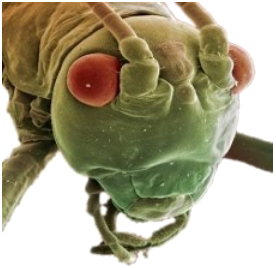

Horario
Lunes: 11:00 a 12:30
Miércoles: 12:30 a 15:00
Horario
Lunes: 11:00 a 12:30
Miércoles: 12:30 a 15:00
Tema 4. La Cabeza

• Segmentación de la cabeza
• Cápsula cefálica
• Líneas y áreas
• Labro y clípeo
• Hipofaringe
• Tentorio
• Teorías sobre segmentación
Capítulo 8. La cabeza (texto)
Presentación. La cabeza
Modelo 3D. Cabeza
Modelo 3D. Tentorio
Lecturas complementarias:
• Anton, et al. 2016. The Head Morphology of Clambidae.
• Friedemann, et al. 2012. On the head morphology of Phyllium.
• Knauthe, et al. 2016. Head anatomy of a miniaturized Strepsiptera.
Tema 5. El tórax y las alas

• El cuello
• Áreas del tórax
• Esternón, Pleura y Tergo
• Alas. Venas y venación
• La articulación alar
• Las áreas del ala
• Los músculos de las alas
• Formación y desarrollo de las alas
• Origen filogenético de las alas
Capítulo 9. El tórax (texto)
Capítulo 10. Las alas (texto)
Presentación. Tórax y alas
Lecturas complementarias:
• Dickinson, M. 2001. Solving the Mystery of Insect Flight.
• Dickinson, M. 2006. Insect Flight.
• Floreano, D. et al. 2009. Flying Insects and Robots.
• Friedrich F. & R.G. Beutel. 2008. The thorax of Zorotypus.
• keller, R.A. et al. 2014. Evolution of thorax architecture in ants.
• Koeth, M. et al. 2012. The thoracic skeleto-muscular system of Mengenilla.
• Sudo, S. et al. 2005. Wing Characteristics of Flying Insects.
• Tórax. Revisión bibliográfica por Isabel Salazar (2019).
Calendario de actividades 2021
11 y 13 de enero. Huevo y desarrollo embrionario.
18 y 20 de enero. Integumento, segmentación y apéndices.
25 y 27 de enero. Las extremidades cefálicas.
1 y 3 de febrero. La cabeza.
8 y 10 de febrero. El tórax y las alas.
15 y 17 de febrero. El abdomen y sus apéndices.
22 y 24 de febrero. Órganos de ingestión de ortópteros, neurópteros, coleópteros e himenópteros.
1 y 3 de marzo. Órganos de ingestión de lepidópteros, dípteros, hemípteros y homópteros.
8 y 10 de marzo. Aparatos digestivo y excretor.
15 y 17 de marzo. Aparatos circulatorio y respiratorio.
22 y 24 de marzo. El sistema nervioso.
29 y 31 de marzo. Los órganos de los sentidos.
5 y 7 de abril. Órganos reproductores internos.
12 y 14 de abril. Órganos genitales externos.
19 y 21 de abril. Evaluación del curso.